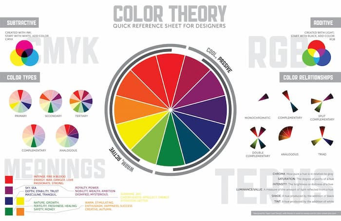

“Mis intereses son:”
- Comunicar de manera asertiva
- Por muy sencillo que parezca, la comunicación es uno de los pilares más importantes dentro de las habilidades de un diseñador gráfico, pues más allá de diseñar, mi labor principal es comunicar de una manera asertiva cualquier tipo de idea a través de la imagen.
- Ser una persona creativa
- Las habilidades de un diseñador gráfico no tienen el mismo significado sin un pensamiento creativo. Una personalidad creativa y una actitud que pueda generar diferentes propuestas a los clientes es vital para el desempeño de tu profesión.
- Tener conocimientos sobre dibujo
- Aunque saber dibujar no es una obligación para tus habilidades de diseño gráfico, ten por seguro que dibujar será una gran ventaja para encarar cualquier tipo de proyecto que se te presente.
- Dominar la teoría del color
- Otra de las habilidades más importantes de un diseñador gráfico está en conocer el significado de los colores y la manera correcta de combinarlos.
- Trabajar en equipo
- Aunque la mayoría de labores de un diseñador gráfico se ejecutan de manera individual, debes tener en cuenta que pueden haber ocasiones en las que debas trabajar junto a un equipo. Por eso es fundamental que tu capacidad de escucha sea un componente desarrollado para que el flujo de trabajo sea optimizado.
- Dominar la última tecnología
- por obligación, debe estar actualizado con términos y aplicaciones tecnológicas, pues son indispensables para cumplir con las labores de diseño. Recuerda que un trabajo de buena calidad, en muchas ocasiones depende de los recursos con los que contemos y también el conocimiento sobre los mismos.
-
Mis hobbies
- Me gusta ver series
- Mi grupo favorito de musica es MORAT
- Mis peliculas favoritas son las de Cars
- Amo tomar fotos
- Me gusta innovar con lo que puedo



Cancion Favorita
Serie Favorita
Pagina1
Pagina2